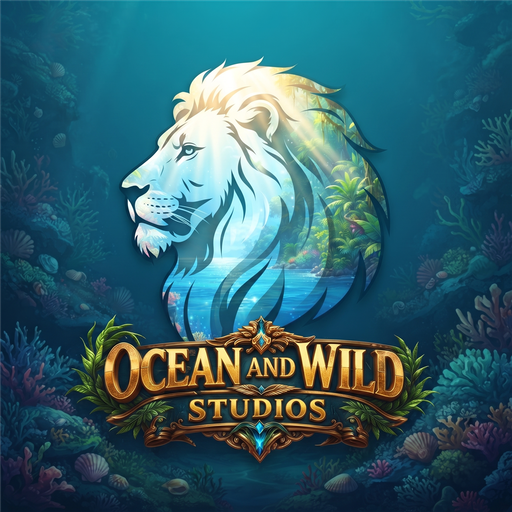

3.4.3029 cambios17 OCT 2026⌄
Actualizaciones a todo el ancho, Changelogs para el launcher y una Surface renovada de punta a punta.
ÚLTIMA VERSIÓN
OWS HUB PRESENTACIÓN · 3.4.30Ocean & Wild Studios presenta
El ecosistema, más ordenado que nunca.
ACTO 01 · ACTUALIZACIONES
Todo el ecosistema en una sola lista.
ACTO 02 · CHANGELOGS
El launcher se suma al recorrido completo.
ACTO 03 · NOTICIAS
Noticias compactas, lectura sin fricción.
La actualización más grande del launcher: Actualizaciones y Noticias rediseñadas, Changelogs para el Hub y Surface con identidad propia.
Actualizaciones ahora ocupa todo el ancho y reúne a todos los proyectos en un listado compacto. Cada fila abre una ficha con versión instalada, disponible, fecha, peso, plataforma, canal y las novedades de la versión; las acciones viven ahí adentro.
Changelogs suma al propio Hub con su historial completo, y Surface estrena identidad, secciones propias y transferencias que acreditan de verdad al destinatario.
ACTO 04 · EVENTOS
Datos con aire y una cuenta atrás que no se detiene.
Completá partidas, subí en el ranking y desbloqueá el aspecto Marea Dorada antes de que el evento desaparezca.
ACTO 05 · LANZAMIENTOS
El destacado se lleva toda la pared derecha.
ACTO 06 · SURFACE
Nueva identidad, misma cuenta, mismos saldos.
ACTO 07 · SURFACE
Transferencias que acreditan de verdad.
ACTO 08 · SURFACE
Secciones claras, preferencias que se recuerdan.
OWS HUB · ACTUALIZACIÓN DISPONIBLE
29 cambios para ordenar todo tu universo.
Presentación de OWS Hub 3.4.30, del 17 de octubre de 2026 para Windows en formatos NSIS y MSI. Incluye 29 cambios en Actualizaciones, Changelogs, Noticias, Eventos, Lanzamientos y Surface. La presentación dura tres minutos y puede pausarse o recorrerse por capítulos con el reproductor inferior.